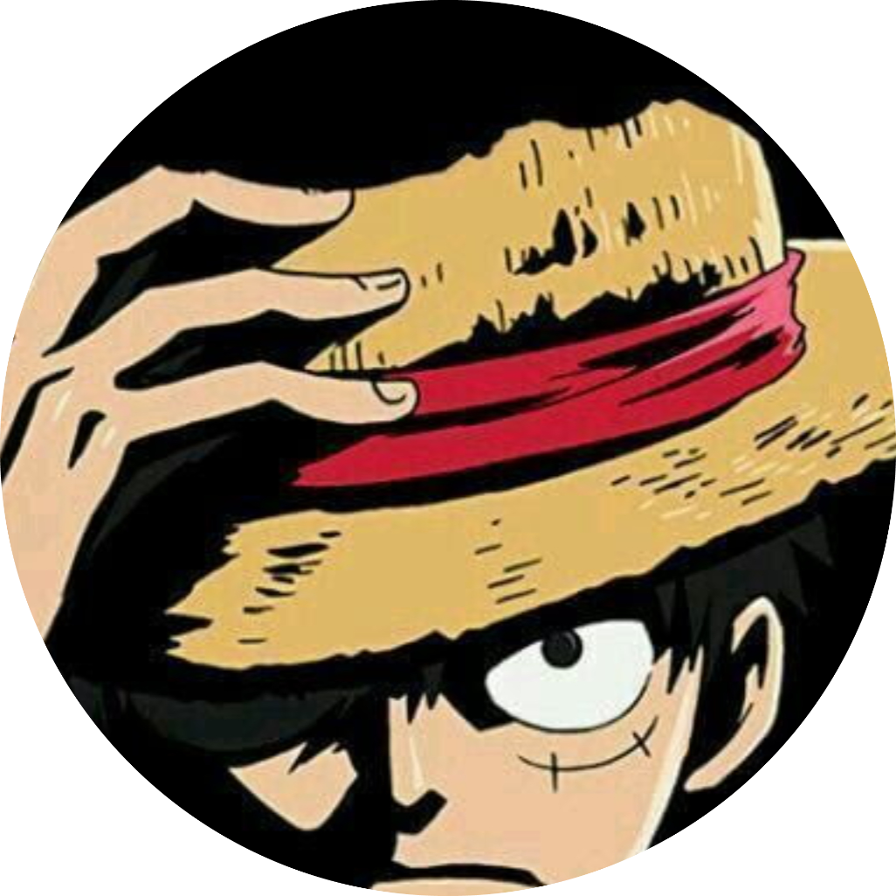

|  | Hey! I am Moneky D Luffy and I want to be a pirate king. |
Monkey D. Luffy is the protagonist of Eiichiro Oda's One Piece. Luffy set out on a journey to become the Pirate King in the Great Pirate Era to claim the treasure known as the One Piece left behind by Gol D. Roger. With time, Luffy established a powerful crew and went on to make quite a name for himself. He became the strongest pirate in the East Blue shortly after setting out on his journey and then immediately headed to the Grand Line. There, Luffy learned about the toughness of the sea and grew even further.